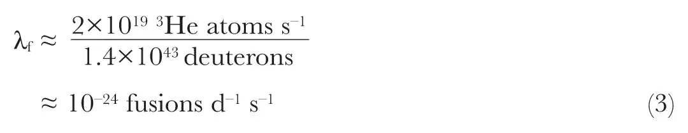
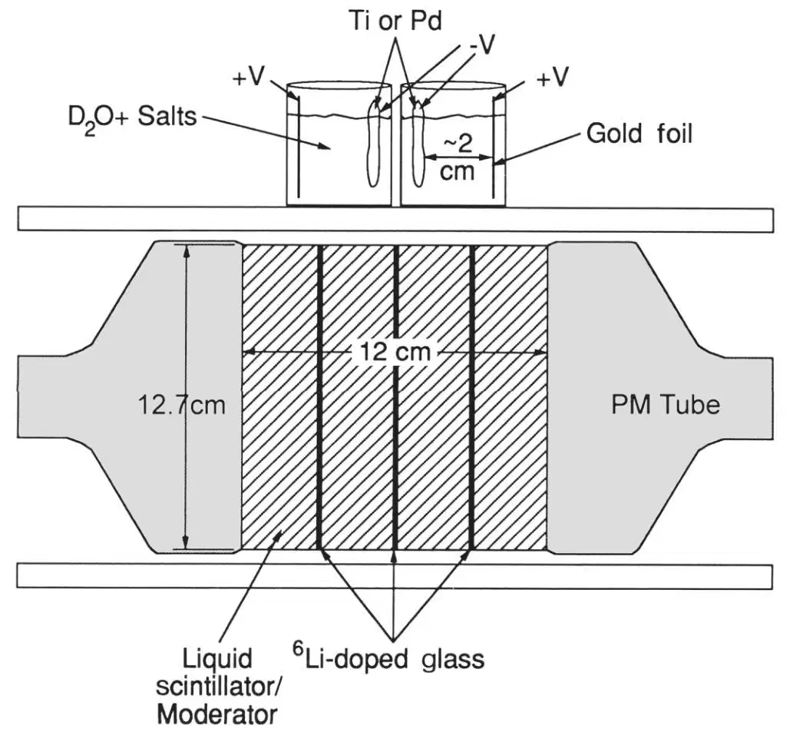
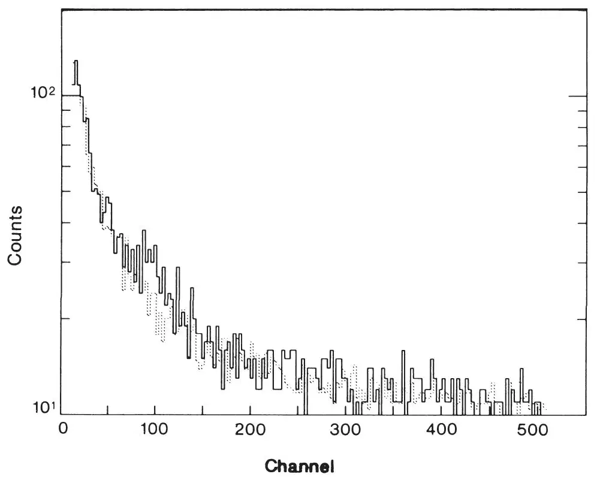
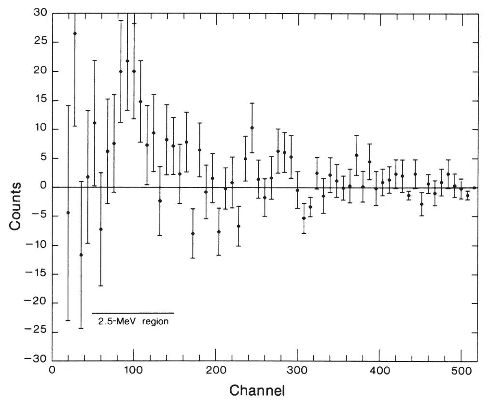
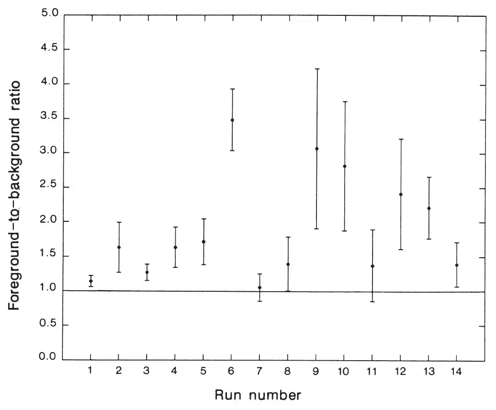
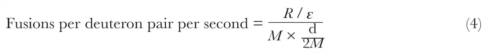

中文
中文S. E. Jones et al.
Editor’s Note
In 1989, two groups of researchers working in Utah believed they had found evidence that electrolysis of heavy water using palladium electrodes could trigger nuclear fusion of the deuterium atoms, offering vast amounts of energy in a simple benchtop process. Both groups submitted their results to Nature. After questions raised by referees, one team—Martin Fleischmann, Stanley Pons and their student Marvin Hawkins at the University of Utah—withdrew their paper and published it elsewhere. This is the other paper, by Steven Jones and colleagues at Brigham Young University. The controversial claim of cold fusion spurred worldwide activity to replicate the results, but no such vindication was ever found, and electrolytic “cold fusion” is now almost universally discredited. 中文
When a current is passed through palladium or titanium electrodes immersed in an electrolyte of deuterated water and various metal salts, a small but significant flux of neutrons is detected. Fusion of deuterons within the metal lattice may be the explanation. 中文
FUSION of the nuclei of isotopes of hydrogen is the principal means of energy production in the high-temperature interiors of stars. In relatively cold terrestrial conditions, the nuclei are surrounded by electrons and can approach one another no more closely than is allowed by the molecular Coulomb barrier. The rate of nuclear fusion in molecular hydrogen is then governed by quantum-mechanical tunnelling through that barrier, or equivalently, the probability of finding the two nuclei at zero separation. In a deuterium molecule, where the equilibrium separation between deuterons (d) is 0.74 Å, the d–d fusion rate is exceedingly slow, about 10–74 per D2 molecule per second1. 中文
By replacing the electron in a hydrogen molecular ion with a more massive charged particle, the fusion rate is greatly increased. In muon-catalysed fusion, the internuclear separation is reduced by a factor of ~200 (the ratio of the muon to electron mass), and the nuclear fusion rate correspondingly increases by about eighty orders of magnitude. Muon-catalysed fusion has been shown to be an effective means of rapidly inducing fusion reactions in low-temperature mixtures of hydrogen isotopes2,3. 中文
A hypothetical quasi-particle a few times as massive as the electron would increase the cold fusion rate to readily measurable levels of ~10–20 fusions per d–d molecule per second1. The results reported here imply that a comparable distortion of the internuclear wavefunction can be realized when hydrogen isotope nuclei are loaded into metals under certain conditions. We have discovered a means of inducing nuclear fusion without the use of either high temperatures or radioactive muons. 中文
Indirect Evidence
Observations of naturally occurring 3He in the Earth suggested to us new directions for laboratory investigations of nuclear fusion in condensed matter. 3He is produced by the following fusion reactions:
p + d → 3He + γ(5.4 MeV)
(1)
d + d → 3He(0.82 MeV) + n(2.45 MeV)
(2a)
→ t(1.01 MeV) + p(3.02 MeV)
(2b)
Tritium (t) decays with a 12.4-yr half-life to produce 3He. The well established high 3He/4He ratio in solids, liquids and gases associated with volcanoes and other areas of high heat flow4-6 suggests fusion as a possible source for the 3He. 中文
To estimate a possible rate of fusion in the Earth, we assume a simple, steady-state model in which the known flux of 3He out of the mantle, 2×1019 3He atoms per second7, arises from p–d fusion occurring uniformly in the mantle water reservoir, taken as ~1.4×1024 g(R. Poreda, personal communication). Note that if the Earth contains “primordial” 3He, our calculated rate will be an upper limit; on the other hand, if fusion-produced 3He is stored in the mantle (so that the outward flux does not equal the production rate), our value will be a lower limit. As each p–d fusion produces one 3He atom, and as the isotopic abundance of deuterium in water is ~1.5×10–4 deuterons per proton, we infer a geological fusion rate constant, γf, of

This rate is fifty orders of magnitude larger than that expected in an isolated HD molecule, and fusion at this rate could be detected if reproduced in the laboratory. 中文
Cold nuclear fusion may be important in celestial bodies other than the Earth. Jupiter, for example, radiates about twice as much heat as it receives from the Sun. It is interesting to consider whether cold nuclear fusion in the core of Jupiter, which is probably metallic hydrogen plus iron silicate, could account for its excess heat. Heat is radiated at an approximate rate of 1018 watts, which could be produced by p–d fusions occurring at a rate of 1030 s–1 1. Assuming a core of radius 4.6×109 cm, containing mostly hydrogen, with density ~10 g cm–3 and a deuteron/proton ratio of ~10–4, we deduce a required p–d fusion rate of γf ≈10–19 fusions d–1 s–1 if all the heat derives from fusion. Catalysed nuclear fusion at this rate could be readily measured in the laboratory. 中文
Further evidence for cold nuclear fusion in condensed matter comes from studies of 3He and 4He in metals. There have been several reports of high 3He concentrations in metal crucibles and foils (H. Craig, R. Poreda, A. Nier, personal communications), consistent with in situ formation by cold fusion. In particular, Mamyrin et al.8 report the occurrence of patchy, high concentrations of 3He in a number of metal foils. Electrolytic refining of the metals could have provided the appropriate conditions for the cold nuclear fusion reactions (1) and possibly (2). Among several possible explanations for the observations, the authors suggest an analogue of muon catalysis8. 中文
Detection of Cold-fusion Neutrons
The considerations outlined above led to laboratory experiments performed at Brigham Young University to determine whether cold nuclear fusion can actually occur in condensed matter. We now report the observation of deuteron–deuteron fusion at room temperature during low-voltage electrolytic infusion of deuterons into metallic titanium or palladium electrodes. The fusion reaction (2a) is apparently catalysed by the deposition of d+ and metal ions from the electrolyte at (and into) the negative electrode. Neutrons with an energy of ~2.5 MeV are clearly detected with a sensitive neutron spectrometer. The experimental layout is shown in Fig. 1. 中文

Fig. 1.Schematic diagram of the experiment. Electrolytic cells are shown on top of the neutron spectrometer. 中文
The neutron spectrometer, developed at Brigham Young University over the past few years (ref. 9 and manuscript in preparation) has been crucial to the identification of this cold fusion process. The detector consists of a liquid organic scintillator (BC-505) contained in a glass cylinder 12.5 cm in diameter, in which three glass scintillator plates doped with lithium-6 are embedded. Neutrons deposit energy in the liquid scintillator through multiple collisions, and the resulting light output yields energy information. As their energy decreases, the neutrons are scavenged by 6Li nuclei, and the reaction n + 6Li →t + 4He results in scintillations in the glass. Pulse shapes and amplitudes from the two scintillators differ; the two distinct signals are registered by two photomultiplier tubes, whose signals are summed. A coincidence of identified signals from the two media within 20 μs identifies an incoming neutron that has stopped in the detector. 中文
The spectrometer was calibrated using 2.9- and 5.2-MeV neutrons generated by deuteron–deuteron interactions at 90° and 0°, respectively, with respect to a deuteron beam from a Van de Graaff accelerator. The observed energy spectra show broad structures which imply that 2.45-MeV neutrons should appear in the multichannel analyser spectrum in channels 45-150. The stability of the detector system was checked between data runs by measuring the counting rate for fission neutrons from a broad-spectrum californium-252 source. 中文
We have performed extensive tests to verify that the neutron spectrometer does not respond preferentially in this pulse height range to other sources of radiation such as thermal neutrons. In particular, we made unsuccessful efforts to generate false 2.5-MeV neutron “signals” by using various γ-ray and neutron sources and by turning auxiliary equipment on and off. Neutron-producing machines such as the Van de Graaff accelerators were off during all foreground and background runs. 中文
Many background runs were made using operating cells (described below) containing standard electrodes and electrolytes, except that H2O replaced the D2O; other background runs were made using both new and previously used standard cells containing D2O plus the usual electrolyte but with no electrical current. The individual background runs were all featureless and closely followed the pattern of the integrated background shown in Fig. 2. Background rates in the neutron counter are ~10–3 s–1 in the energy region where 2.5-MeV neutrons are anticipated. By comparing energy spectra from γ-ray and neutron sources we have determined that approximately one-fourth of the observed background events arise from accidental coincidences of γ-rays and three-fourths from ambient neutrons. The γ-ray background comes mainly from radioactive radium and potassium in the surrounding materials. We attribute the ambient neutrons to cosmic-ray sources. Although the typical neutron evaporation spectrum (at birth) has a broad maximum near 2.5 MeV (ref. 10), Monte Carlo calculations show that moderation in the source medium (predominantly the shielding surrounding the detector) will wash out this structure and produce a smoothly decreasing background spectrum above 0.5 MeV, as observed. 中文

Fig. 2. Foreground (solid) and background (dashed) counts as a function of pulse height (corresponding to neutron energy) in the neutron spectrometer. Ten counts have been added to each three-channel bin for clarity of presentation. 中文
The predicted and measured absence of structure in the spectrum of cosmic-ray-produced neutrons will not be influenced by the relatively small temporal variations that may occur in the cosmic-ray flux, such as the observed decreases that may accompany solar flares. This means that the observed peak at 2.5 MeV cannot be accounted for by ambient-neutron background variations, because, as explained below, the analysis is based on the shape of the spectra and not simply on rates. Low-energy cosmic-ray muons would be rapidly scavenged by nuclei with high atomic number, so as to reduce muon-catalysed d–dfusion to a negligible level2,3. Considering volume and solid angle, the rate of production of neutrons by muons absorbed by carbon nuclei in the detector exceeds that from muons absorbed by oxygen nuclei in the electrolytic cells by a factor of ~60. Thus, the presence or absence of electrolytic cells is an unimportant perturbation in the background. 中文
During the search for suitable catalytic materials, the following (unoptimized) prescription for the electrolytic cells evolved. It began with salts typical of volcanic hot springs and included electrode-metal ions. The electrolyte is typically a mixture of ~160 g D2O plus various metal salts in ~0.1 g amounts each: FeSO4·7H2O, NiCl2· 6H2O, PdCl2, CaCO3, Li2SO4· H2O, Na2SO4· 10H2O, CaH4(PO4)2· H2O, TiOSO4· H2SO4· 8H2O, and a very small amount of AuCN. The pH is adjusted to  with HNO3. All 14 runs reported here began with this basic electrolyte. 中文
with HNO3. All 14 runs reported here began with this basic electrolyte. 中文
Titanium and palladium, initially selected because of their large capacities for holding hydrogen and forming hydrides, were found to be effective negative electrodes. Individual electrodes consisted of ~1 g purified “fused” titanium in pellet form, or 0.05 g of 0.025-mm-thick palladium foils, or 5 g of mossy palladium. Typically 4–8 cells were used simultaneously. The palladium pieces were sometimes re-used after cleaning and roughening the surfaces with dilute acid or abrasives. Hydrogen bubbles were observed to form on the Pd foils only after several minutes of electrolysis, suggesting the rapid absorption of deuterons into the foil; oxygen bubbles formed at the anode immediately. Gold foil was used for the positive electrodes. Direct-current power supplies provided3–25 volts across each cell at currents of 10–500 mA. Correlations between fusion yield and voltage, current density, or surface characteristics of the metallic cathode have not yet been established. 中文
Small jars, ~4 cm high and 4 cm in diameter, held ~20 ml of electrolyte solution each. The electrolytic cells were placed on or alongside the neutron counter, as shown in Fig. 1.The present cells are simple and undoubtedly far from optimum. Nevertheless, the present combination of our cells with the neutron spectrometer is sufficient to establish the phenomenon of cold nuclear fusion during electrolytic infusion of deuterium into metals. 中文
Figure 2 shows the energy spectrum obtained under the conditions described above, juxtaposed with the (scaled) background spectrum. We acquired about twice as much background data as foreground data. Assuming conservatively that all deviations from background are statistical fluctuations, we scale the background counts by a factor of 0.46 to match the total number of foreground counts over the entire energy range shown in Fig. 2. A feature in channels 45–150 rises above background by nearly four standard deviations. This implies that our assumption is too conservative and that this structure represents a real physical effect. After re-scaling the background by a factor of 0.44 to match the foreground levels in regions just below and just above this feature, the difference plot (Fig. 3) is obtained. It shows a robust signal centred near channel 100, with a statistical significance of almost five standard deviations. A gaussian fit to this peak yields a centroid at channel 101 with a standard deviation of 28 channels, and an amplitude of 23.2±4.5counts. Both the position and width of this feature correspond to those expected for 2.5–MeV neutrons, according to the spectrometer calibration. The fact that a significant signal appears above background with the correct energy for d–d fusion neutrons (~2.5 MeV)provides strong evidence that room-temperature nuclear fusion is occurring at a low rate in the electrolytic catalysis cells. 中文

Fig. 3. Difference spectrum obtained by substracting scaled background from the foreground. Statistical errors (±1σ) are shown for each eight-channel bin. 中文
Fusion Rate Determination
It is instructive to examine the fourteen individual runs which enter into the combined data discussed above. These runs were performed over the period 31 December 1988 to 6 March 1989. Figure 4 displays, for each run, the ratio of foreground count rate in the 2.5-MeV energy region to the background rate obtained for each run. Electronic changes were made in the apparatus during the course of the experiment which altered the observed background rates, so we plot the data in terms of foreground-to-background ratios rather than absolute rates. In one set of data (runs 1 to 8) for which the system was kept as untouched as possible to avoid changes in background rates, the measured rate of detection of 2.5-MeV neutrons was (6.2±1.3)×10–4 s–1 above background. For this set of data, the background and foreground rates for all energies above ~3 MeV (that is, for all channels from 190 to 512) are equal, at (1.4±0.1)×10–3 s–1. 中文
Run 6 is particularly noteworthy, with a statistical significance of approximately five standard deviations above background. Fused titanium pellets were used as the negative electrode, with a total mass of ~3 g. The neutron production rate increased after about one hour of electrolysis. After about eight hours, the rate dropped dramatically, as shown in the follow-on run 7. At this time, the surfaces of the titanium electrodes showed a dark grey coating. An analysis using electron microscopy with a microprobe showed that the surface coating was mostly iron, deposited with deuterons at the cathode. The same phenomenon of a decrease in the neutron signal after about eight hours of operation appears in run 13 followed by run 14. Runs 13 and 14 use the same eight electrochemical cells, and again the negative electrodes developed coatings after a few hours of electrolysis. These observations suggest the importance of surface conditions for the cold fusion process. Variations in surface conditions and electrolyte composition are anticipated during each test run because materials plate out of solution; the solution pH also changes significantly during a run. These 14 runs represent two choices of electrode material plus various operating currents. These variations may account for the fluctuations in the signal level that are evident in Fig. 4. As these runs represent a total of only ~200 signal neutrons at an average rate of ~2 per hour, it was difficult to optimize experimental conditions. This is a task for future research. 中文
The observed “turning off” of the signal after about eight hours may account for low signal-to-background ratios in runs 1 and 3, in that a signal that lasted for only a few hours may have been overwhelmed after a long (~20-hour) running time. When run 10 started with rates substantially above background, we stopped the run and removed half of the electrochemical cells as a test. The neutron production rate dropped off as expected (run 11). In determining the statistical significance of the data, we included runs 1, 3, 7, 11 and 14, even though we see a systematic reason for their low foreground-to-background ratios as explained above. Run 8, shown in Fig. 4, was inadvertently lost from the magnetic storage device and could not be included in Figs 2 and 3. This does not change our conclusions. 中文

Fig. 4. Ratio of foreground rate to background rate for each run, in the 2.5-MeV energy region of the pulse-height spectrum. Statistical errors (±1σ) are shown. 中文
We can estimate the rate for the neutron-production branch of d–d fusion during electrolysis, specifically for run 6, as follows:

where the observed rate of neutron detection, R = (4.1±0.8)×10–3 s–1, is based on foreground minus corresponding background counts in channels 45–150; the neutron detection efficiency, including geometrical acceptance, is calculated using a Monte Carlo neutron–photon transport code11 to be ε = (1.0±0.3)%; M ≈ 4×1022 titanium atoms for 3 g of titanium; and the ratio of deuteron pairs to metal ions, d/2M ≈ 1, is based on the assumption that nearly all tetrahedral sites in the titanium lattice are occupied, forming the γ-TiD2 hydride. Then the estimated cold nuclear fusion rate for the neutron-production branch, by equation (4), is λf ≈ 10–23 fusions per deuteron pair per second. If most fusions take place near the surface, or if the titanium lattice is far from saturated with deuterons, or if conditions favouring fusion occur intermittently, then the inferred fusion rate must be much larger, perhaps 10–20 fusions per deuteron pair per second. 中文
We note that such a fusion rate could be achieved by “squeezing” the deuterons to about half their normal (0.74-Å) separation in molecules. That such rates are now observed in condensed matter suggests catalysed “piezonuclear” fusion as the explanation1. A possible cause is that quasi-electrons form in the deuterated metal lattice, with an effective mass a few times that of a free electron. Isotopes of hydrogen are known to accumulate at imperfections in metal lattices12, and a local high concentration of hydrogen ions might be conducive to piezonuclear fusion. Because we have not seen any evidence for fusion in equilibrated, deuterated metals or compounds such as methylamine-d2 deuteriochloride or ammonium-d4 chloride, we conclude that non-equilibrium conditions are essential. Electrolysis is one way to produce conditions that are far from equilibrium. 中文
It may seem remarkable that one might influence the effective rate of fusion by varying external parameters such as pressure, temperature and electromagnetic fields, but just such effects are seen in another form of cold nuclear fusion, muon-catalysed fusion13. 中文
Conclusions
The correlation of ideas regarding cold piezonuclear fusion1 with observations of excess 3He in metals and in geothermal areas of the Earth led to our experimental studies of fusion in electrochemical cells, which began in May 1986. Our electrolyte compositions evolved from geochemical considerations, and changed as results were observed. The presence of a fusion neutron signal was consistently reproduced, although the rate varied widely. Now that our exploratory searches have disclosed a small piezonuclear fusion effect, it remains to disentangle the factors that influence the fusion rate. 中文
The need for off-equilibrium conditions is clearly implied by our data, and suggests that techniques other than electrochemistry may also be successful. We have begun to explore the use of ion implantation and of elevated pressures and temperatures, mimicking geological conditions. Cold nuclear fusion in condensed matter may be of interest as a novel probe of metal-hydrogen systems, including geological ones, and as a source of monoenergetic neutrons. If deuteron–deuteron fusion can be catalysed, then the d–t fusion reaction is possibly favoured because of its much larger nuclear cross-section. Although the fusion rates observed so far are small, the discovery of cold nuclear fusion in condensed matter opens the possibility, at least, of a new path to fusion energy. 中文
(338, 737-740; 1989)
S. E. Jones*, E. P. Palmer*, J. B. Czirr*, D. L. Decker*, G. L. Jensen*, J. M. Thorne*, S. F. Taylor* & J. Rafelski†
* Departments of Physics and Chemistry, Brigham Young University Provo, Utah 84602, USA
† Department of Physics, University of Arizona, Tucson, Arizona 85721, USA
Received 24 March; accepted 14 April 1989.
References:
1. Van Siclen, C. D. & Jones, S. E. J. Phys. G. 12, 213-221 (1986).
2. Jones, S. E. Nature 321, 127-133 (1986).
3. Rafelski, J. & Jones, S. E. Scient. Am. 257, 84-89 (July 1987).
4. Craig, H., Lupton, J. E., Welhan, J. A. & Poreda, R. Geophys. Res. Lett. 5, 897-900 (1978).
5. Lupton, J. E. & Craig, H. Science 214, 13-18 (1981).
6. Mamyrin, B. A. & Tolstikhin, L. N. Helium Isotopes in Nature (Elsevier, Amsterdam, 1984).
7. Craig, H. & Lupton, J. E. in The Sea Vol. 7 (ed. Emiliani, C.) Ch. 11 (Wiley, New York, 1981).
8. Mamyrin, B. A., Khabarin, L. V. & Yudenich, V. S. Soviet Phys. Dokl. 23, 581-583 (1978).
9. Jensen, G. L., Dixon, D. R., Bruening, K. & Czirr, J. B. Nucl. Instrum. Meth. 220, 406-408 (1984).
10. Hess, W. N., Patterson, H. W. & Wallace, R. Phys. Rev. 116, 445-457 (1959).
11. MCNP: Monte Carlo Neutron and Photon Transport Code, CCC-200 (Version 3) (Radiation Shielding Information Center, Oak Ridge Natn. Lab., 1983).
12. Bowman, R. C. Jr in Metal Hydrides (ed. Bambakides, G.) 109-144 (Plenum, New York, 1981).
13. Jones, S. E. et al. Phys. Rev. Lett. 51, 1757-1760 (1983).
Acknowledgements. We acknowledge valuable contributions of James Baer, David Mince, Rodney Price, Lawrence Rees, Eugene Sheely and J. C. Wang of Brigham Young University, and of Mike Danos, Fraser Goff, Berndt Müller, Albert Nier, Göte Ostlund and Clinton Van Siclen. We especially thank Alan Anderson for advice on the data analysis and Harmon Craig for continuing encouragement. This research is supported by the Advanced Energy Projects Division of the US Department of Energy.